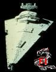

Forums galactiques > Taverne galactique : lieu de discussion informel > Les Ultrèmes.
Pages : 1
| Kaserkine Réputation à la taverne : 0  01/05 ETU 16:13 | Score : 0 Détails Race extrèmement colante, les ultrèmes disent vouloir "la paix", mais ne sont que des usurpateurs et des voleurs dans Origine. Si ils viennent ici, je vous prierais de ne pas les laisser s'emparer de la planète gouvernement (si il y en a une dans votre galaxie) et de ne pas les laisser se dévelloper. Aurevoir.
Message préventif de Kaserkine. | ||
| Drokarak Réputation à la taverne : 7  01/05 ETU 16:33 | Score : 0 Détails Cdt Kasermachin,nous saurons très bien nous débrouiller face à d'éventuels invasions ultrèmes.
| ||
| Ariel Golleport Réputation à la taverne : 959  01/05 ETU 16:50 | Score : 0 Détails Les premiers Ultrèmes qui viennent ici recevront des baffes venant de notre très cher et aimé Impératrice. Et elle ne ris pas.
| ||
| Lia Réputation à la taverne : 2740  01/05 ETU 16:56  | Score : 0 Détails [HRP]
Gardez vos problemes (adjectif censuré) chez vous. On se fiche completement de ces trucs la ici. Origine n'est rien ici. Le concept meme d'ultreme(etc..) ne devrait meme pas exister ici. Vous etes lourds à la fin. | ||
| Ikari Réputation à la taverne : 249  01/05 ETU 18:31 | Score : 0 Détails Ici on est dans la G2, les ultrèmes, les vrais, sont uniquement dans la G0 (en tout cas les personnages ultrèmes), et eux, contrairement à certains, ne gâchent pas le RP en parlant de choses venant d'autres galaxies !
| ||
| Wolverine Réputation à la taverne : 2271  02/05 ETU 10:51 | Score : 0 Détails Kaserkine, retourne dans la G0 et laisse-nous tranquille ...
| ||
| Ghozer Réputation à la taverne : 226  02/05 ETU 10:52 | Score : 0 Détails Et ramene moi un Ghozer aux Fruits la prochaine fois!
J'en est plus un seul en stock! Et y'a pas assez d'Uranium en Espérance pour en fabriquer moi même. Merci! | ||
| Gunther Réputation à la taverne : 286  02/05 ETU 10:56 | Score : 0 Détails Les Ultrèmes n'existent pas ici!
un moment j'ai cru me tromper de galaxie! D'autant plus que les ultrèmes de la Go font parti de mon ezntourage IRL et qu'eux n'ont pas l'intentionde venir ici! | ||
| Sether Réputation à la taverne : 116  02/05 ETU 12:13 | Score : 0 Détails Ils ont raison...
Commence à y en avoir marre de tout ces blazés de la G0, qui, parcequ'ils sont trop mauvais pour réussir à survivre aux ultrèmes (qui utilisent pourtant TOUJOURS les mêmes stratégies, donc qui sont devenu relativement prévisible), viennent empoisonner les autres galaxies en balaçant partout que ce qu'ils n'osent pas insulter dans la g0, de peur de se faire anéantir immédiatement. Marre aussi de tout les gens qui arrivent en se proclamant ultrème, alors qu'ils n'ont rien de rien panné au mouvement... Les vrais ultrèmes ne jouent QUE dans la g0, et ils ne joueraient certainement pas d'ultrème dans les autres galaxies... Ce serait débile... Ils se feraient cataloguer tout de suite. Navré de vous décevoir, mais les fondateurs ultrèmes, les vrais ultrèmes, on un cerveau qui tourne vraiment très bien... Cela, je peux vous le garantir pour en avoir été victime, fût un temps... | ||
| Gunther Réputation à la taverne : 286 02/05 ETU 12:21 | Score : 0 Détails "Victime" n'est pas le mot!
| ||
| Sether Réputation à la taverne : 116 02/05 ETU 12:29 | Score : 0 Détails Quand on se fait démonter diplomatiquement, au point de voir sa coalition obliger de se dissoudre, qu'on voit les 3/4 de ses alliés perdrent toutes ou presque toutes leurs planètes et flottes en moins de 48 heures, et qu'on voit son propre empire attaqué de partout, même si ça louppe souvent, parcequ'on fait parti des plus bunkeriser de la galaxie, vous appelez ça comment, vous ?
| ||
| Gunther Réputation à la taverne : 286 02/05 ETU 13:01 | Score : 0 Détails Tu faisais partie des disciples de la foi?
Tu étais qui? | ||
| daetha Réputation à la taverne : 526  02/05 ETU 13:08 | Score : 0 Détails HRP// Bordel, vous pouvez pas en parler en privé ! Ca commence à me gonfler tout ces sujets de merde qui ne servent qu'à pourrir d'avantage la taverne !
On devrait faire des croisades anti HRP, une planète en moins à chaque intervention HRP. La taverne est un endroit de détente RP. Lâchez vous, que votre imagination flamboit en ce lieu, faites parler de votre personnage, faites connaitre votre caractère...//HRP | ||
| Parisii Réputation à la taverne : 1721  02/05 ETU 14:09 | Score : 0 Détails A ce titre, sachez que mon lieu de débauche "chez parisii" est ouvert à tous ceux qui veulent de la bagarre, du complot et de l'amusement. Un orc y mange actuellement, alor si vous voulez vous dégourdir les poings, ou bien risquer votre vie pour un simple breuvage, n'hésitez surtout pas.
| ||
| Sether Réputation à la taverne : 116 02/05 ETU 16:13 | Score : 0 Détails Daetha, si cette conversation ne t'interresse pas, ne te crois pas obliger de venir ouvrir ce topic, plutot que de venir pousser une guelante. Nous sommes libres de parler de ce que nous voulons, dans la taverne.
Ensuite, je ne vois pas de quoi Gunther parle avec les disciples de la foi, je parle de l'aire juste post-apocalypse divine. | ||
| amiral piett Réputation à la taverne : 19  06/05 ETU 10:32 | Score : 0 Détails HRP/pour avoir longtemps diriger les disciples de la foi je confirme qu'aucun n'est dans cette galaxie et meme si il y en a nous avons changer de RP alors lachez nous un peu!!!!/HRP
|
Pages : 1
Forums galactiques > Taverne galactique : lieu de discussion informel > Les Ultrèmes.